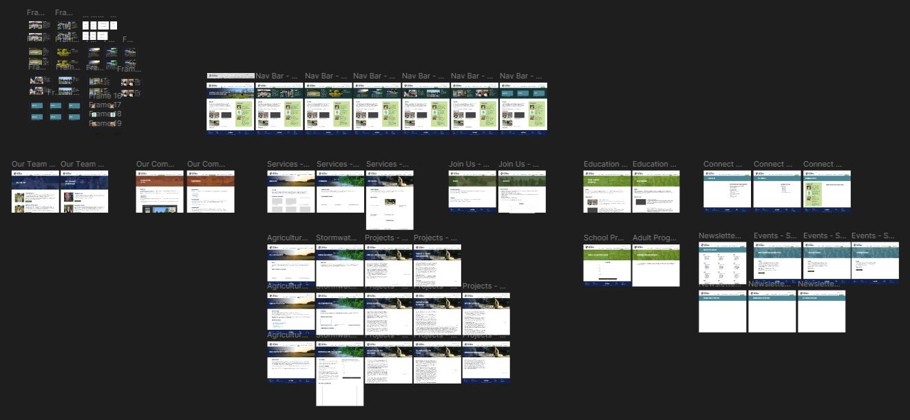
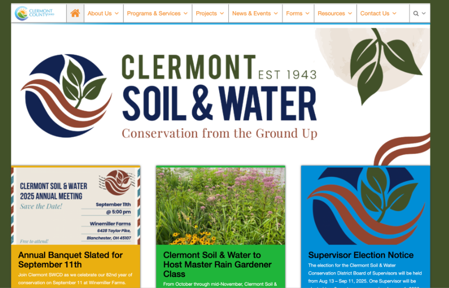
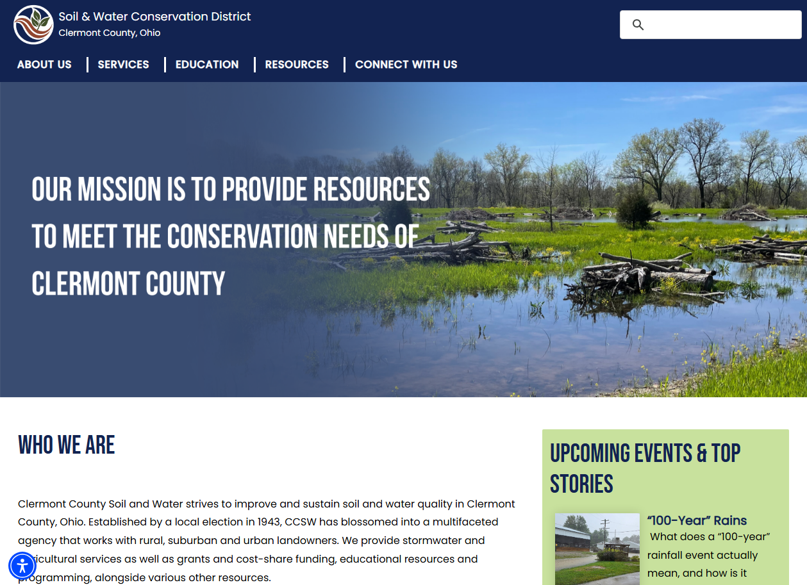

Website Redesign for Clermont County Soil and Water Conservation District
CONTEXT
Project Overview
For my professional writing capstone, my team and I worked with Elea Cooper, the Education and Communications Coordinator of the Clermont County Soil and Water Conservation District (CCSWCD), to redesign their website. After our initial meeting with her, she stated that CCSWCD’s main concerns were making the site feel less overwhelming, more user-friendly, and more accessible. Throughout this process, we conducted ux research through rhetorical analysis, employee interviews, and user interviews, designed hi-fedlity wireframes and mockups in Figma, then presented our final mocups after several rounds of iteration to CCSWCD's board of employees.
PROCESS
Research, Design, and Iteration
In order to properly address the scope of things that CCSWCD wanted from us, the first step of our process included extensive research. We compared the site's current layout against other countys' soil and water conservation district websites, we analyzed CCSWCD's branding and style guide to judge their website's accordance with it, we researched WCAG accessibility principles and judged them against the site's current layout, read up on scholarship notating favored ux principles, practices, and heuristics. Afterwards, we each indivually wrote up our overall analysis and comparisons alongside our initial suggestions for the site's redesign in a short memo.
Once the short proposals in our memos got approved, we got into teams to begin the design process. We drafted a lot of our initial ideas on paper, then slowly transitioned to digital drawing programs and eventually Figma.

Past this point, our research process and design process were most often intertwined. We sent our proposed designs over to usability testing interviews with employees of CCSWCD, frequent users of CCSWCD, and our peers. We analyzed the results and used our most common findings to continuously improve the site. Once we had reached the deadline and reached a final mockup we were happy with, we presented our research and design proposals to CCSWCD's main board.
CHALLENGE
Meeting Demands with Constraints
Since a big part of our goal was ensuring that our proposed designs were easily navigable, we needed to make sure we had interactable prototypes that our interviewees could click through during our testing. Due to time constraints and limits with our client, we couldn't put our designs to code. Therefore, we had to do everything natively to Figma. Prior to this project, I had only used Figma for lo-fidelity wireframing and coded any interactions directly via VSCode. Additionally, I was the only person on my team with any prior experience with coding or using Figma, so a lot of my work once we got to the design phase of the project was teaching the rest of my team how to use Figma alongside teaching new things to myself. Thankfully, my co-designer was fairly communicative and was able to pick up things quite quickly after a few one on one meetings. I'm also thankful for everything this project taught me in terms of working with components and auto-layouts in Figma.
One of the other big challenges we faced was learning to work with CCSWCD's constraints. With one of main focuses being to switch the site's organization to more of an action-based model rather than an educationally-based one, there were a lot of educational resources and seemingly irrelevant newsletters on the site that we wanted to strike out or redirect to a new location. One example of this was CCSWCD's old banner detailing their Board of Supervisors Election. However, Elea noted their notice of the election was required by the Board to be on the home page. Not wanting to compromise our model, we eventually settled on a two-column design for the home page that would allow space for all the information we wanted to show as well as the information they were required to. Overall, this ended up influencing a lot of our design for later pages and greatly improved the visual interest of our designs.
IMPACT
CCSWCD's Website Today
Overall, it seems like CCSWCD adopted most of our designs and recommendations outlined in our team's proposal in their current site layout. The most noticable differences between the two are the layouts of the footer and header, some of the hover features, and the addition of a second container to the right column on the home page.

CCSWCD's website (Aug 2025)

CCSWCD's website (Dec 2025)
REFLECTION
Process Transparency and Learning on the Fly
This is one of the first big projects I had that required a lot of direct communication between people on my team who understood parts of my process but maybe not the whole thing, my clients who knew the aim of my work but not all I did to reach my conclusions, and also other participants who were blind to all of it. One of the biggest things this project taught me in these circumstances was how to properly communicate my process throughout all touchstones of my work and how best to vary that communication depending on my audience. While this felt initially quite difficult for areas I was still learning while trying to explain them, I found that going through this process helped me in addressing gaps in my research and collaborate with my team when needed, gather the most affective data when working with outside participants / interviewees, and also provide powerful presentations to my clients.